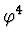

Construction of doubly periodic solutions via the
Poincare-Lindstedt method in the case of massless

theory.
O. A. Khrustalev1
Institute for Theoretical Problems of Microphysics,
Moscow State University,
Department of Physics, Moscow State University,
Moscow, 119899, Russia
and
S. Yu. Vernov2
Institute of Nuclear Physics, Moscow State University,
Moscow, 119899, Russia
Doubly periodic (periodic both in time
and in space) solutions for the Lagrange-Euler
equation of the (1+1)-dimensional scalar theory are studied. Provided that nonlinear term is small, the
Poincare-Lindstedt
asymptotic method is used to find asymptotic solutions in the standing
wave form. It is proved that using the
Jacobi elliptic function
cn as the zero approximation one can solve
the problem of the main resonance, appearing in the case of zero mass, and
construct a uniform expansion.